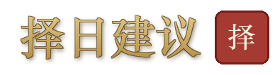
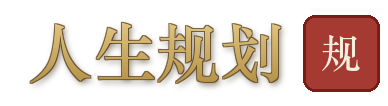
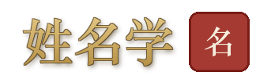
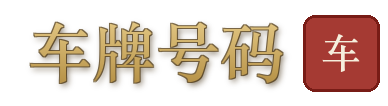
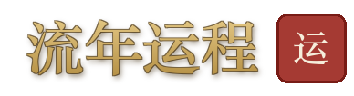
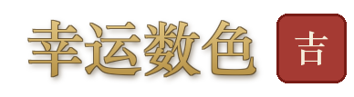

1选择主题
→2浏览民俗
→3查看典故
→4文化学习
查看民俗工具中心 · 命理宝鉴，了解功能详情与使用方式。
🏮 民俗工具中心
命理宝鉴 · 十四大民俗工具 · 经典依据 · 白话解读
👤 我的生辰（个人化 · 选填）：
填上后，黄历/择日/太岁会按你的生肖日支给出「与我何干」
⏰ · 时光选择看日子 · 择吉时 · 知节气
日干支 · 建除 · 宜忌 · 冲煞 · 值神 · 胎神
GET /api/minsu/huangli

嫁娶 · 搬家 · 开业 · 动土 · 安葬 · 祭祀 · 出行
GET /api/minsu/zeri
本命太岁 · 冲刑害破 · 化解建议
GET /api/minsu/taisui
节气表 · 当前节气 · 节气养生
GET /api/minsu/jieqi
法定假日 · 农历节日 · 道教佛诞 · 儒家纪念
GET /api/minsu/holidays
🪷 · 人生大事婚配 · 生育 · 家庭 · 规划
生肖六盒六冲 · 五行生克 · 纳音 · 吕才合婚法
GET /api/minsu/hehun
古籍词库 · 五行补益 · 防重名 · 避讳提示
POST /api/minsu/xingming/suggest
家庭成员五行 · 生肖关系 · 缺五行分析
POST /api/minsu/family

阶段定位 · 领域评分 · 五年路径 · 行动清单
POST /api/ai/lifeplan-report
🔢 · 号码姓名日常所用 · 数理趋吉 · 带改进建议
尾数五行 · 81数理 · 组段分析 · 连号重号
GET /api/minsu/mobile

三才五格 · 笔画五行 · 81数理 · 相生相克
GET /api/minsu/xingming
现名评分 · 短板诊断 · 同姓古籍备选
POST /api/minsu/xingming/rename
行业五行 · 创始喜用 · 字号吉凶测评
POST /api/minsu/gongsi

尾数五行 · 81数理 · 豹子号/顺子/对子
GET /api/minsu/plate
📈 · 流年运势今年运气 · 幸运加持

生肖关系 · 五行年运 · 12流月评分
GET /api/minsu/liunian

幸运数字 · 幸运色 · 方位 · 季节
GET /api/minsu/lucky
🧭 · 排盘进阶专业排盘 · 命理师向
命理宝鉴 · 民俗工具中心 · 14 件工具 · 五大用途分组 · 白话引擎 v2← 返回首页